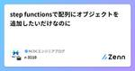
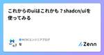

NCDCエンジニアブログのフィード
https://zenn.dev/p/ncdc
NCDC株式会社( https://ncdc.co.jp/ )のエンジニアチームです。 募集中のポジションや、採用している技術スタックの紹介などはこちらをご覧ください！ https://github.com/ncdcdev/recruitment
フィード

step functionsで配列にオブジェクトを追加したいだけなのに
NCDCエンジニアブログのフィード
記事の内容コード書いていると配列へのオブジェクト要素の追加とかよくあると思います。step functionsで同様のことをしようとしたとき、一筋縄でいかなかったのでこちらに記載しておこうと思います。 関係する技術・ツールAWS Step Functions したいこと文章にするより、コード例を提示したほうが一目瞭然だと思います。下記のようなことがしたいのです。 example.jsconst users = [ { id: 1, name: "Alice" }, { id: 2, name: "Bob" }, { id: 3, name: ...
21時間前

これからのuiはこれかも？shadcn/uiを使ってみる 1
1
NCDCエンジニアブログのフィード
はじめに開発でMaterial-UIを使っていて、デザインの細かい要望で強引なカスタマイズをしてしまうことがありました。shadcn/uiはカスタマイズが容易なので、紹介も兼ねて試してみます。shadcnさんが作ったらしいです。 とりあえず、ボタンコンポーネントを使ってみるshadcn/uiではこのようにコンポーネントをインストールします。必要に応じてコンポーネントをインストールしてくるので、全体のファイル量が軽量であるのもshadcn/uiの特徴です。npx shadcn@latest add buttonコマンド実行後、components/uiにbutton....
4日前
GitHub Foundations が受験しやすくなっていた。(GitHub認定試験) 1
NCDCエンジニアブログのフィード
GitHub Foundations 取得しました。今更ですが。https://www.credly.com/badges/986df878-efd7-4c0d-9e6c-07e1c336b12e/public_url合格時のスコアは40/60で67%でした。低いですね。言い訳すると、英語力がなさすぎてGitHubの知識以前に問題や選択肢に書いてあることが理解できてなかったです。ダメダメですね。でも、2/3正解すれば受かる程度のハードルの低さということが分かりますね。みんなも受けよう！ GitHub Foundations とは？半年くらい前(2024年の初頭の頃)から誰...
5日前

Scala入門以前
NCDCエンジニアブログのフィード
最近（2024/9）Scalaをさわり始めたので、コードを書く以前の知識を整理する Versionの話現在Scalaにはバージョン2系とバージョン3系が存在する- 3.xは2.13.yに対して後方互換性を持つ[1]Scala 3がリリースされたのは2021/52024年現在でも2系を使う人が一定数存在する JDKの話Scalaは基本的にJavaやKotolinと同じJVM言語であるため、[2]開発にはJDKを必要とするだいたい新しいものを選んでおけばよさそう[3] ビルドツールの話Scalaのビルドツールはsbt, millなど複数あるが（mave...
19日前
Linuxのマルチブート環境を作る
NCDCエンジニアブログのフィード
なんの記事？Windows PCからUbuntuのマルチブート環境を作成したときに詰まったポイントのメモ。 必要なものインストール体調のディスク（今回はSSD）イメージを焼くディスク（今回はUSBメモリ）有線マウス・キーボード 手順 Ubuntuのイメージを入手する検索して出てくる最新のデスクトップ版をダウンロードするhttps://www.ubuntulinux.jp/download イメージを焼くisoイメージファイルをディスクに焼く今回はRufusを使用するとくに設定はいじらず、対象ディスクを選択（目的デバイスが表示されていない場合...
21日前
AWS+SlackでノーコードでRAGが構築できるようになっていた
NCDCエンジニアブログのフィード
はじめに4ヶ月ほど前、Amazon Bedrockのエージェントを使ったらRAGが簡単に構築できたよ。という記事を投稿しました。https://zenn.dev/ncdc/articles/41bf6e7735ec9fですが、BedrockのエージェントはCLIから呼び出せないという欠点があり、Slackと連携しようとするとLambda等のコードを書く必要がありました。しかし、2024年9月にAWS Chatbotと連携する機能が追加されたことで、Slackとの連携がノーコードでできるようになりました。(通常のCLIからの呼び出しは引き続きできませんが、、、)https:/...
1ヶ月前
NPMパッケージバージョンを常に最新に保つ！GitHub Actionsで自動チェック＆Issue作成
NCDCエンジニアブログのフィード
とりあえずコード毎月1日にnpmで管理しているパッケージのバージョンをチェックし、最新になっていないパッケージがある場合にはIssueを作成するようなGithub Actionsですname: Check npm packages version on the first day of the monthon: schedule: - cron: "0 0 1 * *"jobs: check-npm-version: name: Check npm packages version runs-on: ubuntu-latest st...
1ヶ月前
Value Objectの===を防ぐeslintルール
NCDCエンジニアブログのフィード
なんの記事？Value Object(以下VO)をtypescriptでclassとして実装するとき、値の比較にはisEqual,equalsのようなメソッドを作成して用いることが一般的です。class VO { private readonly _value: string; constructor(value: string) { this._value = value; } get value(): string { return this._value; } isEqual(input: VO) { // よしなに実装す...
1ヶ月前
Cloud RunからAzure OpenAIを呼び出す(Google Cloud→Azureの認証をIAMで通す)
NCDCエンジニアブログのフィード
以前書いた記事のAzure版になります。https://zenn.dev/ncdc/articles/a59403b5799d06 はじめに前回、Google CloudのCloud RunからAWSのBedrockを呼び出してアプリに組み込んだので、今回はAzure OpenAIを呼び出してGoogle Cloud上でGPT-4oを使います。AWSの時と同様に、セキュリティを考慮してAPIキーなどという危険物には頼らずIAMで認証を通します。 IAMで、Google Cloud → Azureの認証を通す 方針AzureとGoogle Cloudは別サービスですの...
2ヶ月前
【Python】mimetypes.guess_type()は環境依存があって困った
NCDCエンジニアブログのフィード
はじめに拡張子からcontent-typeを判定したいなということで、Python標準ライブラリであるmimetypes.guess_type()を使用しましたが、ハマった箇所があったので記事に残します。!なんでハマったのか理解するために書いた記事で、解決策を示すものではありません。 起きた事象content_type, _ = mimetypes.guess_type(file_name)if content_type is None: logger.error("Unsupported content_type: %s", file_name) ...
2ヶ月前
【Flutter】【android】background_fetchライブラリでバックグラウンドタスクを扱う
NCDCエンジニアブログのフィード
Flutter でバックグラウンドタスクを実行したく、background_fetch ライブラリを利用してみました。基本的な動作確認は pub.dev の Exampleを動かすと全体イメージはつくかと思います。記述量も少なくて割とシンプルに実装できます。この記事では Android の設定を中心に実装方法を記載します。!iOS についてはこの記事ではほとんど言及しません。iOS については制約が多いため、別記事にまとめました。https://zenn.dev/ncdc/articles/flutter_background_fetch setupREADME ...
2ヶ月前
コンテナで作ったAPIをGitHub ActionsからAmplify Gen2にDeployする
NCDCエンジニアブログのフィード
はじめにAmplify Gen2の開発体験は素晴らしいのですが、CI/CD環境でdockerコマンドが使えない制約があるのがツラいです。https://zenn.dev/ncdc/articles/f959131cf5f4b5という記事を書いたところ、カスタムパイプラインを使えばできるというコメントをいただきましたので、GitHub ActionsからのDeployを試してみます。Amplify Gen2のカスタムパイプラインのドキュメントはこちらになります。https://docs.amplify.aws/react/deploy-and-host/fullstack-b...
2ヶ月前
【Flutter】iOS のバックグラウンドタスクについての仕様調査
NCDCエンジニアブログのフィード
flutter でバックグラウンド時に定期処理を実行したくて、色々と調査した結果を記載します。※ iOS がバックグラウンドタスクについて制約が多かったので、この記事では iOS メインで記載します。android については言及しません。!以下の記事内の引用は、README や公式ドキュメントの内容を翻訳して記載しております。若干翻訳のニュアンスが違うこともあると思うので、詳しくは引用元をご確認ください。 ライブラリ選定Flutter GemsのTop Flutter Android/iOS Device Software and Hardware packagesを...
2ヶ月前
作って理解するCloudFormation（yaml）
NCDCエンジニアブログのフィード
はじめに普段、AWS CDKやAmplifyを使ってアプリを作っていますが、その裏ではCloudFormationが動いています。素のCloudFormationを書いたことがなかったので、勉強がてらAPI Gateway、Lambda、DynamoDBを組み合わせたサーバーレスアーキテクチャを構築してみました。 そもそもCloudFormationとは？CloudFormationは、AWSリソースをコード（YAMLまたはJSON）で定義し、そのコードをもとに自動的にインフラを構築・管理するサービスです。CloudFormationテンプレートのYAML形式は、以下のよう...
2ヶ月前
[コスト算出] AWS BackUp にかかる1ヶ月分のコストをざっくり見積もってみた
NCDCエンジニアブログのフィード
!この記事では以下について触れます。背景前提算出感想では、初めて行きます。 背景AWS Pricing Calculator という、AWSリソースのコスト見積もりツールが公式にあり、こちらを使用して算出しようとしたところ、どうやら、ツールではサポートされていないようでした。そのため、AWS BackUp の公式を確認し、自身でコストを算出する必要があったため、備忘録として残しておこうと思い、本記事を書きました。ちなみに、料金見積もりツールはこちらです。👇https://calculator.aws/#/ 前提以下の前提に基づき、コストを算出して...
2ヶ月前
Blenderで弊社ロゴを作ってreact-three-fiber/dreiで表示してみた
NCDCエンジニアブログのフィード
早速Blenderでロゴを作ってみたBlenderは3Dモデルを作ることができる無料のソフトです。また操作も視覚的で分かりやすく、初めて触る自分でも30分ほど動画を見れば操作できるようになりました。実際にできたロゴがこちらです。もう少しこだわりたかったのですが、そこは本題ではないので細かいディティールは妥協することにしました。 Blenderで作ったモデルをエクスポートエクスポートはgltf形式を選択しますが、binファイルも必要になるため、フォーマットを変更しておきましょう。エクスポートが完了すれば、binとgltfファイルをプロジェクトのassets/model...
2ヶ月前
framer-motionでスクロールをリッチに
NCDCエンジニアブログのフィード
はじめにframer-motionはアニメーションを簡単につけることができるライブラリです。https://www.framer.com/motion/introduction/使い方としてはこのようにタブの頭にmotion.を付け、プロップスに各値を渡します。<motion.div animate={{ x: 100 }} />基本的にinitialにアニメーションの初期位置、animateに終了位置、transitionに動き方を書きます。<motion.div initial={{ y: 100, opacity: 0 }} ani...
2ヶ月前
空配列に対するArray.prototype.every()の挙動
NCDCエンジニアブログのフィード
はじめにこの記事は、きちんとドキュメントを読まずにメソッドを使用した自分への戒めであり、記事というよりメモ書きのようなものです。 Array.prototype.every()の基本的な挙動Array.prototype.every()は下記のように、配列内の要素が特定の条件に当てはまるかチェックし、条件に合わない場合はfalseを返します。const array = [10, 20, 30, 40, 50]const result = array.every((a) => a < 30)console.log(result) // false逆に言えば、...
2ヶ月前
TypeORMでカーソル型ページネーションを実装する
NCDCエンジニアブログのフィード
はじめにTypeORMでは、skipとtakeを使用したオフセット型ページネーションをサポートしていますが、カーソル型のページネーションはサポートしていません。そのため、「typeorm-cursor-pagination」というライブラリを使用して実装していきます。https://www.npmjs.com/package/typeorm-cursor-pagination 実装こちらが、カーソル型ページネーションの実装です。import { AppDataSource } from "typeorm";import { buildPaginator } from ...
2ヶ月前
ナレッジからQAデータセットをノーコードで作り、RAGの性能を評価した
NCDCエンジニアブログのフィード
はじめにこんにちは。NCDCのくらはらです。この記事は、NCDCで実施したLT会「AI/MLなんでもLT会 LT初心者歓迎！」で発表した資料の補足記事です。 発表資料RAGの回答精度評価用のQAデータセットを生成AIに作らせた話 補足 3PRAGの詳細なアーキテクチャについては、下記のリンクなどをご参照ください。https://ncdc.co.jp/columns/8742/https://aws.amazon.com/jp/what-is/retrieval-augmented-generation/ 5PRAGの性能評価について、2024/08...
2ヶ月前